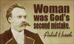
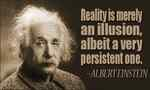

< < < Back
Why Leftists Are Stunned At The Wise Words Of Friedrich Nietzsche – Return Of Kings
If any of you have ever studied philosophy, you have most likely heard of the German naturalist Friedrich Nietzsche (1844-1900), infamous for his proclamation that “God is dead!” and his philosophy regarding the will to power. These aspects of his philosophy alone make it one of the most masculine philosophies to ever exist.
In a nutshell, Nietzsche believes that “God,” or all of the cultural standards and “truths” that are imposed upon us are bullshit, and that it is up to man to forge his own destiny and to determine what he believes to be right and wrong. Is this not what the manosphere’s inhabitants strive to do?
In regards to the will to power, Nietzsche believes that the ultimate goal of life is to “…strive to grow, spread, seize, [and to] become predominant,” (Beyond Good and Evil, §259). He claims that it is expansion which gives us a sense of fulfillment; man must constantly strive to improve himself in every way possible, whether it be physically, financially, intellectually, spiritually, emotionally, or by learning a language, traveling to mysterious, far-off lands, or by taking up a new hobby.
Despite his insightful thoughts on life’s purpose, however, this is not what I plan to focus on in this article. Instead, I have chosen to write about…
Why Leftists hate Nietzsche (his opinion on women)

Even if you haven’t heard of Friedrich Nietzsche, you may have heard about his views on women; many regard them as extremely offensive, hateful, and deeply misogynistic. Dozens of modern day pseudo-intellectuals love to skewer Nietzsche’s view on women, painting him as an irredeemably angry and bitter old man, despite the fact that half of these so called “intellectuals” are probably divorced and the other half are probably in unhappy marriages.
One of the more popular Nietzschean quips which is thrown around is: “Ah, women. They make the highs higher and the lows more frequent,” which is generally true. Another, more offensive quote which is oft thrown around is: “When a woman has scholarly inclinations there is usually something wrong with her sexuality,” which is also generally true. Are you starting to see why leftists hate him so much?
A Lesser Known Passage
All of the hate that Nietzsche gets aside, he still had a profound level of influence on Western philosophy, and an incredibly accurate insight into the nature of women, over a century before the manosphere even existed. It is my hope that we can learn from this sage’s deep wisdom. Today, I have chosen to analyze one of his lesser known “sexist” passages:
Someone took a youth to a wise man and said: ‘Look, he is being corrupted by women!’ The wise man shook his head and smiled. ‘It is men who corrupt women,’ he exclaimed, ‘and the failings of women should be atoned for and set right in men.
(The Gay Science, §68)
…wait a minute. What? Where’s the rambling on about how women corrupt even the best of men? Of the Delilahs and Jezebels? Where are the truthful words about succubae and gold-diggers? Men are the ones who corrupt women? How is this? Women are the most manipulative creatures on the planet, are they not?
Women are in fact gold diggers, but Nietzsche’s words are still true
The wise man goes on:
‘…for man makes for himself the image of woman, and woman shapes herself according to this image.’ ‘You are too gentle towards women,’ said one in the company; ‘you do not know them!’ The wise man replied, ‘the way of men is will; the way of women is willingness – that is the law of the sexes; truly a hard law for women! All human beings are innocent of their existence; women, however, are doubly innocent. Who could have oil and mercy enough for them?’ ‘Forget oil! Forget gentleness!’ shouted someone else from the crowd; ‘one has to raise women better!’ ‘One has to raise men better,’ said the wise man and beckoned the youth to follow him – but the youth did not follow him.
(The Gay Science, §68)
This is quite the opposite of what most men would expect. Instead of harping on women for being manipulative creatures or berating them for their vanity, he blames MEN instead! To those who have fully embraced neomasculine principles, Nietzsche’s words will seem quite sagacious. They peer so deep into the psyche of men and into the nature of women with so few words.
Men…or women?
In this parable, there are clearly two opposing parties: the wise man (arguably the embodiment of Nietzsche’s opinion) and the foolish villagers who argue that a woman has corrupted some youth.
Ask yourself right now: which are you?
Do you blame women for the state of our society, or do you blame men?
If you blame women, here’s the harsh truth: you’re part of the problem.
“What?” you might ask. “Are most women nowadays not validation-seeking, narcissistic sluts?”
They most certainly are, however this is not entirely their fault. It’s not even half their fault. Women are followers, and they accept the path that men have laid down before them. As Nietzsche said: “…the way of men is will; the way of women is willingness.” Men will for certain things to happen, and women are willing to help make these things happen.
How can one expect a woman to be a faithful, chaste, kind-hearted soul, when her father was most likely a pathetic, weak beta male who gave into her every demand? How do you expect her to develop any semblance of humility, when every man who she dates grovels at her feet, and treats her like a goddess?
Those men laid down the path before her; they laid down a path of arrogance, vanity, promiscuity, and misery – and she followed it, for women seldom forge their own paths.
He is laying down the wrong path for her to follow
It’s quite simple, really. When a woman has a strong, masculine father who sets firm boundaries for her, she naturally becomes a feminine nurturer. When she doesn’t have a strong father, she turns to her friends and the media for the guidance which her father has deprived her of.
A slut only becomes a slut when she does not have the firm, masculine guidance which she needs. Nobody can give this to her but a man. It is a man’s responsibility to raise a daughter who is chaste and kind, and who embodies feminine virtues. If he fails to do this, he has deprived his daughter of the joy that comes with being a faithful wife and mother.
Again, Nietzsche’s words ring true.
Advanced frame manipulation: nuanced game
Your frame, in essence, is the way that you interpret reality – it’s what you feel, what you think, what you believe, it’s the way that you understand and navigate the world.
For instance, a standard American male’s frame might go something like this: “The world is a scary place. Women want nice guys. Men are perverted assholes. I’m not very special.” Pretty depressing, isn’t it?
Can you guess what this guy’s frame is?
To contrast, a player’s frame might go something like this: “I’m the shit. The world is a playground. Women want confident, assertive men. Most men are fucking pussies, but not me. I’m the shit.”
Do you see the massive difference?
Women want a man who has a strong frame.
Women want to know that their man has a very strong internal sense of purpose, and that he’s 100% confident in himself, but it’s sometimes hard to tell if a man is actually confident, or if he’s just acting that way. So what’s a woman to do?
Shit test you. This is why women shit test men: they want to see if they can shake your frame. When a woman realizes that you have a stronger frame than her, she will slowly accept your frame to be true.
So what does this have to do with Nietzsche?
Again, let us refer to this philosopher’s words: “‘…for man makes for himself the image of woman, and woman shapes herself according to this image.’”
Man creates his image of woman, and she shapes herself accordingly. This is what advanced frame manipulation is.
“But Jon!” I can hear you say, “I’m 35, and I don’t want to fuck sluts anymore. I want to find a wife!”
It doesn’t matter. Frame manipulation works. Men lead, and women follow. If you want your wife to be faithful, then act and think as if she is faithful. Set the frame that she’s a chaste virgin, and she will act like a chaste virgin when she’s with you.
Act as if you expect women to be motherly and nurturing, and your girlfriend will act this way. It’s that simple, and I cannot emphasize this highly simple, yet so-frequently overlooked concept: women shape themselves according to men.
What frame do you think her boyfriend has?
Now, this doesn’t mean that you should come to believe that your woman is actually like this. If you have the frame that she’s a chaste virgin, but when she’s alone she runs into a player with a strong “all girls want to fuck me” frame, it will be very tempting for her to get sucked into his reality. At this point, whether or not she sleeps with him comes down to the values she was raised to value, social pressure, and logistics.
Don’t become delusional. Just because you set a frame for a woman doesn’t mean that she actually becomes what you think she is. Women are chameleons—that’s Nietzsche’s whole point. They follow whichever man has the strongest frame.

I am advocating something known as “reality selection.” In a nutshell, reality selection is training yourself to get rid of disempowering beliefs and learning how to accept empowering beliefs. It’s probably one of the most powerful ways to improve your life, because instead of fixing the external factors (have better posture, work out, eat well, etc.) it fixes the very ROOT of the problem: your negative beliefs about yourself.
I personally used reality selection to reprogram my mind after an abusive childhood left me feeling absolutely worthless, and I’ll be talking more about how you can use reality selection to transform your life once I launch my blog.
One Last Nietzschean Lesson…
If there’s only one lesson I impart to you today, I hope that it is this: we must create more high quality men who embody the principles of neomasculinity if we wish to see the West survive.
“‘Forget oil! Forget gentleness!’ shouted someone else from the crowd; ‘one has to raise women better!’ ‘One has to raise men better,’ said the wise man and beckoned the youth to follow him – but the youth did not follow him.”
The man in the crowd, or many of those new to the manosphere, advocate that we raise women better, and I agree. However the problem is that unless we raise men better, raising women better isn’t even possible. In order to raise women better, our society must value traditional gender differences and have a strong sense of morality. This can only be accomplished by raising men better.
Eventually, feminism will be viewed as a verminous plague which is rotting our culture from the inside out, women will be expected to be maternal nurturers again, and men will reclaim their past glory and honor as the strong, wise providers and protectors that they are.
Conclusion
We must realize that the current state of the West is not the fault of women. Men must step up to the plate. We must embrace neomasculine principles and encourage others to do so as well. We must develop our minds and bodies. We must cultivate core confidence and create rock solid frames. We must fight against the progressivist machine. We must raise men better—even a long-dead German philosopher saw this to be true.
Read More: Parting Words From A Dying Man


{kind=link}
{kind=link}
{kind=link}
{kind=link}
{kind=link}
{kind=link}
{kind=link}
{kind=link}